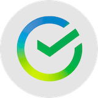

Портфель в деталях.
Решения — в контексте.
Что изменилось, из чего сложился результат и что держать в поле зрения. Ваши счета, аналитика и план — в Invest Workspace.
Динамика портфеля

СбербанкSBER · 12036 600 ₽+8,93%Откройте больше,
чем баланс.
Посмотрите, как разные части портфеля складываются в общую картину.
Движение денег.
Понятный результат.
Изменение стоимости и результат инвестиций видны отдельно.
Сбербанк
SBER · RUBСписок наблюдения, цена и график — в одном рабочем разделе.
Важное остаётся
перед глазами.
Сбербанк · пример напоминания
События по активам и ваши напоминания находятся рядом.
Попробуйте в деле.
Настоящий интерфейс Invest. Меняйте период, открывайте разделы, исследуйте детали.
От цифр — к пониманию.
Из чего сложился результат
Отделяйте движение рынка от пополнений. Смотрите сделки, выплаты и комиссии за выбранный период.
Итого+21 620 ₽
Сохраняйте контекст решений
Наблюдайте за инструментами, отмечайте события и сохраняйте торговые идеи. Расчёт риска и план доступны рядом с портфелем.
Invest не отправляет торговые поручения.
Проверить распределение портфеляЛичное напоминание · 10:00
Вернуться к инвестиционной идееТорговый план · Черновик
От установки
к своему портфелю.
Подключение начинается в Nexus. Данные Invest остаются на вашем компьютере.
Установить NexusУстановите приложение
Скачайте Nexus для Windows и войдите в аккаунт.
Подключите Т-Инвестиции
Следуйте подсказкам защищённого подключения с доступом для просмотра.
Откройте свой Workspace
После синхронизации появятся счета, позиции и история операций.
Ваш брокер. Общая картина.
Invest собирает доступные данные Т-Инвестиций в одном пространстве.
 Nexus
NexusПоддерживаемый источник счетов, операций и рыночных данных. Подключение выполняется в приложении.
Расширение списка брокеров планируется. Сроки и конкретные подключения пока не объявлены.
Стоимость, позиции и распределение по вашим счетам.
Пополнения, сделки и выплаты в общей истории портфеля.
Т-Инвестиции — поддерживается. Другие брокеры — в планах.
Личный портфель остаётся личным.
Брокерский ключ и рабочая база Invest хранятся на вашем компьютере. Nexus управляет аккаунтом и доступом к продукту.
Один набор возможностей.
Удобный вам срок.
Обычный Invest: месяц, три месяца или год. Pro готовится отдельно.
Сравнить вариантыПеред первым запуском.
Это терминал для торговли?
Нет. Сейчас Invest подключается к Т-Инвестициям для просмотра данных. Заметки и торговые планы не размещают заявки у брокера.
Можно посмотреть без подключения счёта?
Да. Демо выше работает на вымышленных данных и не запрашивает брокерский ключ.
Где находится мой портфель?
Рабочая база Invest и брокерский ключ находятся на вашем Windows-компьютере. Сайт управляет аккаунтом и подпиской, но не заменяет локальное приложение.
Когда можно оформить подписку?
Публичный запуск готовится. Доступность регистрации и оплаты отображается в кабинете. Текущие условия и стоимость опубликованы в оферте.